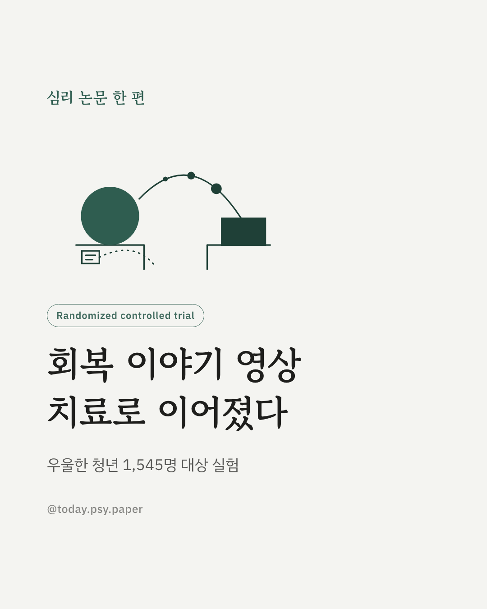
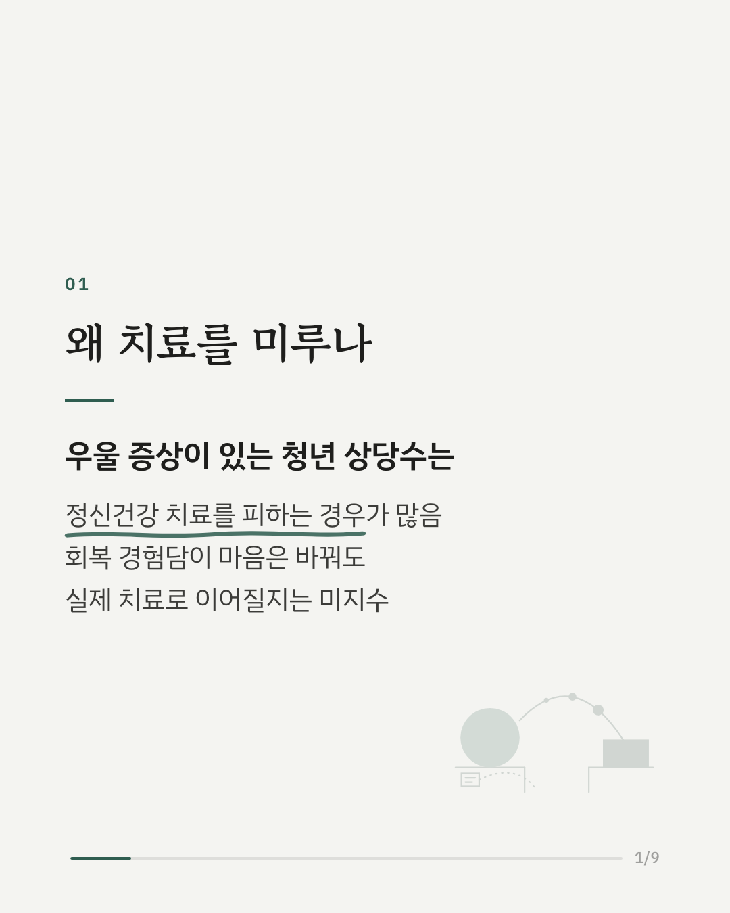
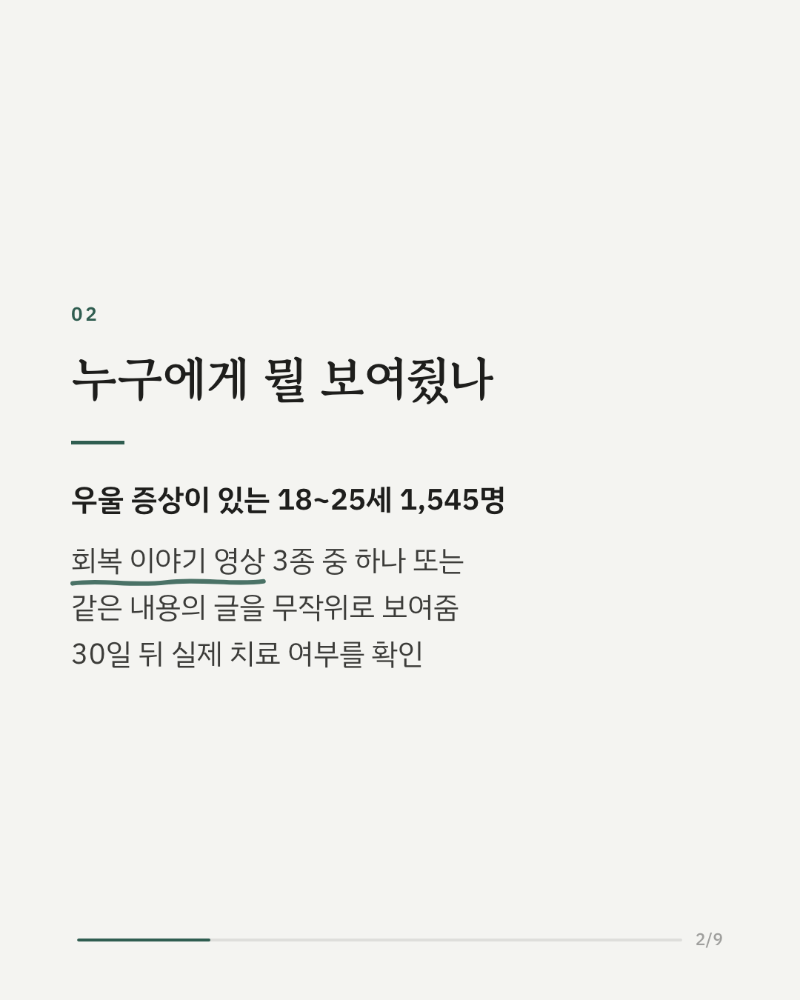
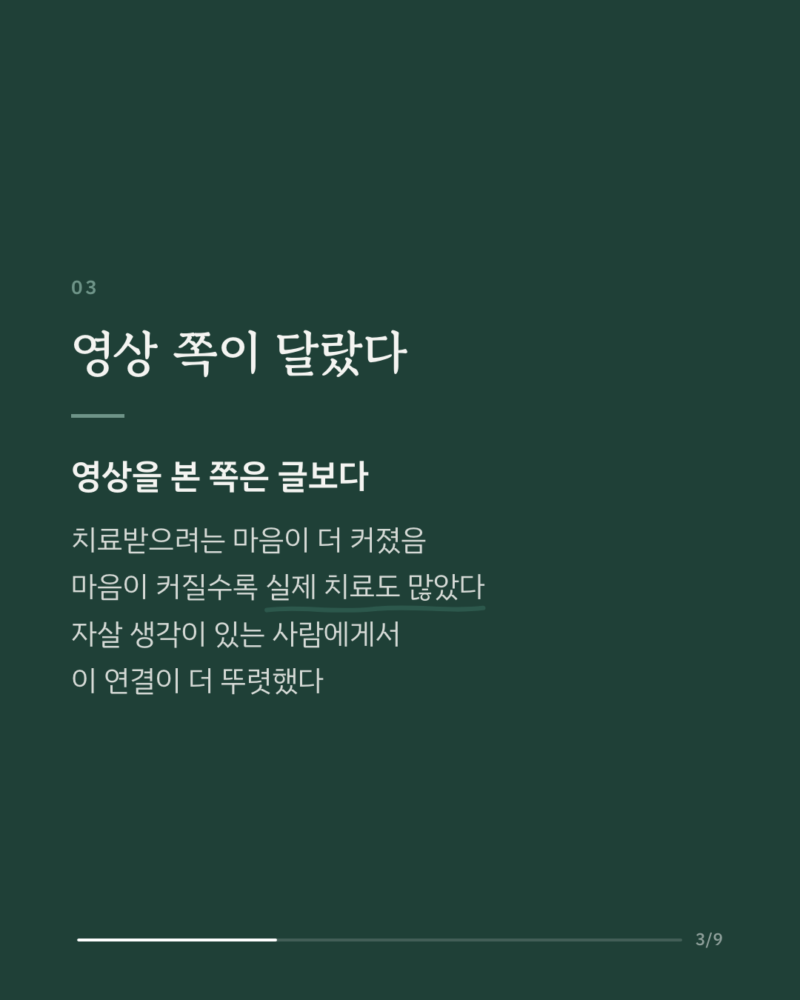
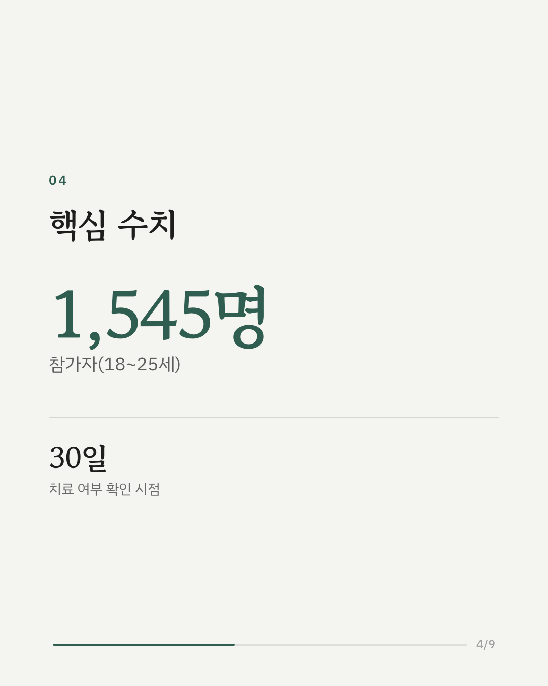
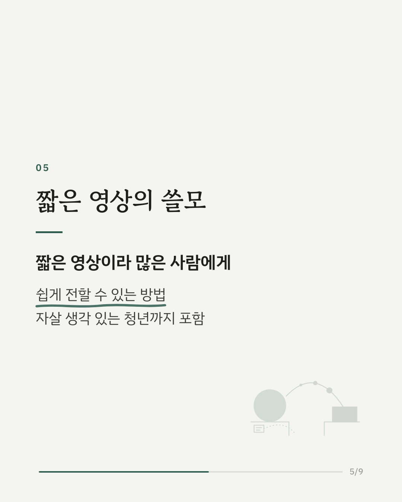
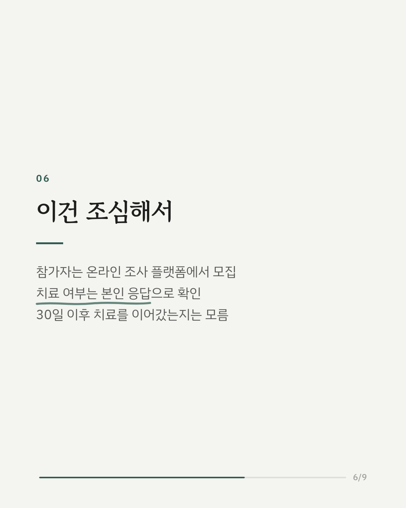
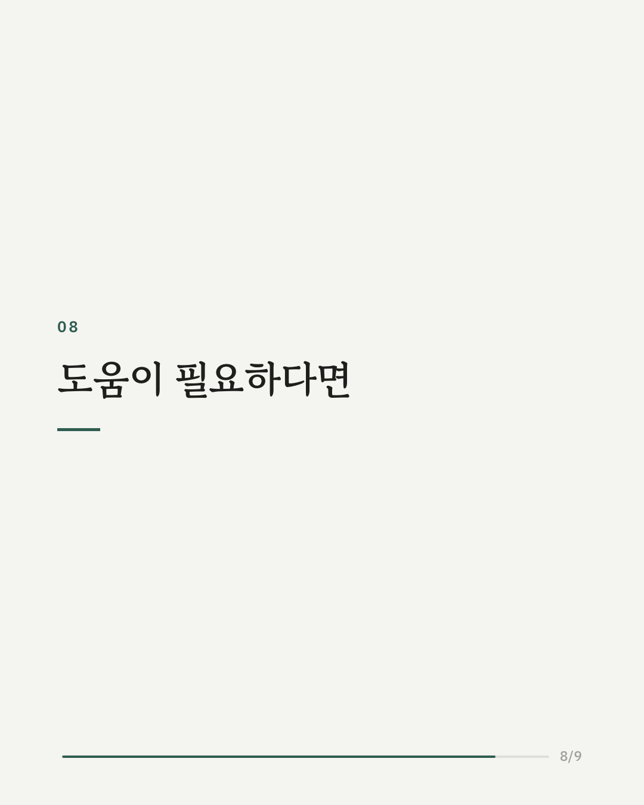
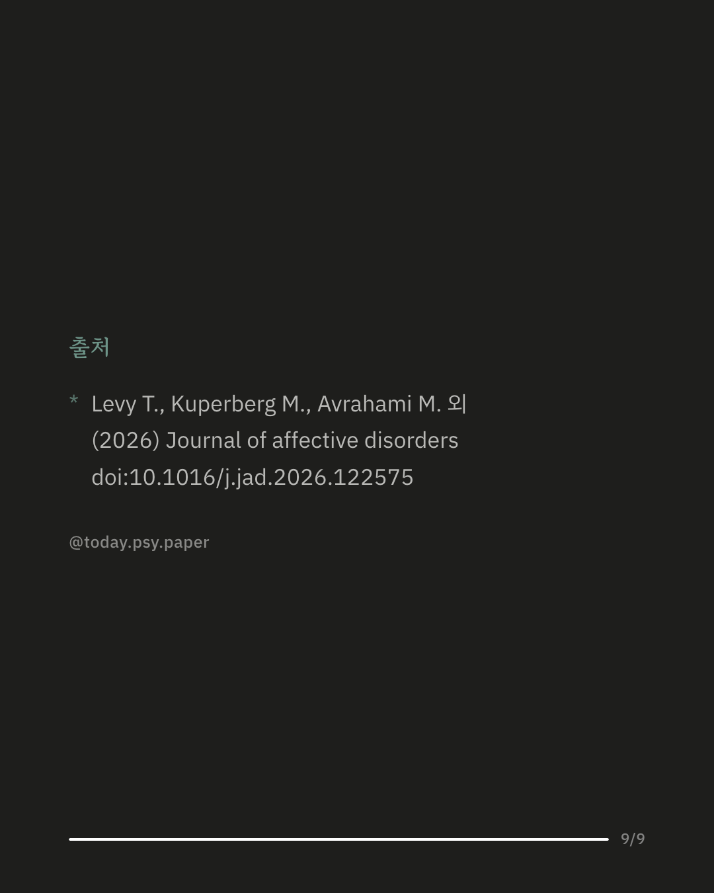

우울증 증상이 있는 청년들은 정신건강 치료를 피하는 경우가 많습니다. 이 연구는 회복 경험을 직접 들려주는 짧은 영상이 실제 치료로 이어지는지 살펴봤습니다. 18~25세 1,545명을 무작위로 나눠 회복 이야기 영상 3종 중 하나, 또는 같은 내용을 글로 옮긴 자료를 보여줬습니다. 영상을 본 쪽은 치료받으려는 마음이 더 커졌고, 30일 뒤 실제로 치료를 받은 경우도 더 많았습니다. 이 마음의 변화가 영상과 치료 사이의 관련성을 일부 설명했고, 자살 생각이 있는 사람에게서는 마음의 변화와 실제 치료 사이의 연결이 더 뚜렷했습니다. 짧은 영상은 많은 사람에게 쉽게 전할 수 있어, 자살 생각이 있는 청년을 포함해 치료를 찾도록 돕는 방법이 될 가능성이 있습니다. 다만 치료 여부는 참가자 본인의 응답으로만 확인했고, 30일 이후에도 치료가 이어졌는지는 알 수 없습니다. 출처: Journal of Affective Disorders (2026), 'Brief social contact videos to promote treatment seeking among young adults with depressive symptoms: Intention change, suicidal ideation, and treatment use in a randomized controlled trial' DOI: 10.1016/j.jad.2026.122575 혼자 견디기 힘들다면 자살예방상담전화 109, 정신건강위기상담전화 1577-0199에서 24시간 상담을 받을 수 있습니다. #임상심리 #정신건강정보 #심리학연구 #논문리뷰 #우울증 #청년정신건강 #심리치료 #자살예방
python3 publish.py 42838232